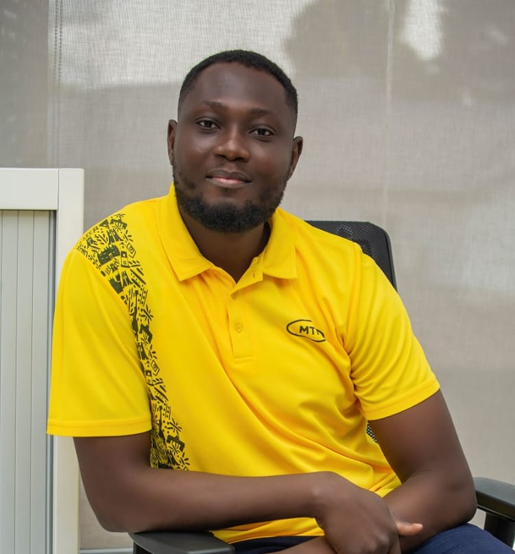

Emmanuel Sackey-Mensah

Summary
Dynamic and motivated individual with ample experience in building relationships and managing assigned projects from concept to completion.
I possess extensive experience as well in designing and commercial utilization of multiple social channels including Facebook and Instagram to build steady strategies for brand awareness, promote customer engagement and drive traffic and conversions.
With a degree in BSc. Admin, I ensure my team are favorites in every project involvement in.
Education
- Undergraduate Degree, University of Ghana (2012-2016)
- BSc Administration (Accounting)
- Fin. Accounting
- Commercial Law
- Auditing
- Investment Fundamentals
- Corporate Reporting
- Principles of Management
- Secondary Education, Achimota Senior High School
- West African Education Council Certificate (WAEC) 2008-2012
- Economics
- Elective Math
- Geography
- Christian Religious Studies (CRS)
Work Experience
- Supervisory Contractor (Relations Manager) - SCANCOM PLC (MTN GHANA)
JAN 2021 - Date
- Manages prestigious customers in MTN.
- Schedules these customers for educative programs and workshops organized by MTN.
- Celebrate these customers on their birthday with cake and souvenirs
- Serves as immediate support when these customers are experiencing discomfort on the network.
- Proactively checking up on these customers to ensure their issues are reported and resolved timely.
- Supervisory Contractor (Customer Relations) - SCANCOM PLC (MTN GHANA)
JAN 2020 - 2021
- Provided ample awareness on product and service to call-in customers.
- Provided assistance to Electronic Voucher Distribution (EVD) agents to reconcile their daily transactions.
- Assisted EVD agents with reversals on wrong transfers.
- Prepared proposals and reports to aid management implement a strategy to reduce repeated calls to the call center.
- Liaised with IT, in support, to resolve customer complaints or concerns.
- Provided first-aid assistance to fellow colleague in troubleshooting and resolving challenged
system software which may hinder the person on delivering on his/her core mandate as a call agent.
Skills
- COMPUTER & DESIGN SKILLS
- Proficient in MS Word, PowerPoint, Outlook, and Excel.
- Proficient in Betheme and Wordpress for website designing.
- Proficient in adobe illustrator, photoshop and premier.
- Proficient in Figma.
- Proficient in Canva.
- PROFESSIONAL SKILLS
- Good listening and communication skills.
- Excellent negotiation skills
- Emotional intelligence.
- Sales and marketing.
- Good people relation skills.
Projects/Achievements & Awards
- Best Service Agent in EVD Team in the month of October 2018.
- Joint winner in MTN Bright Challenge contest.
- Best Service Agent in EVD Team in the first quarter of 2019.
Others